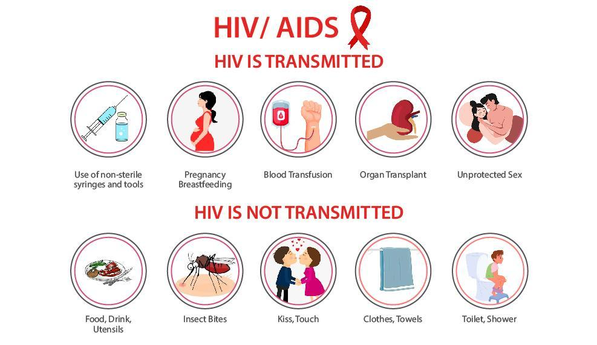
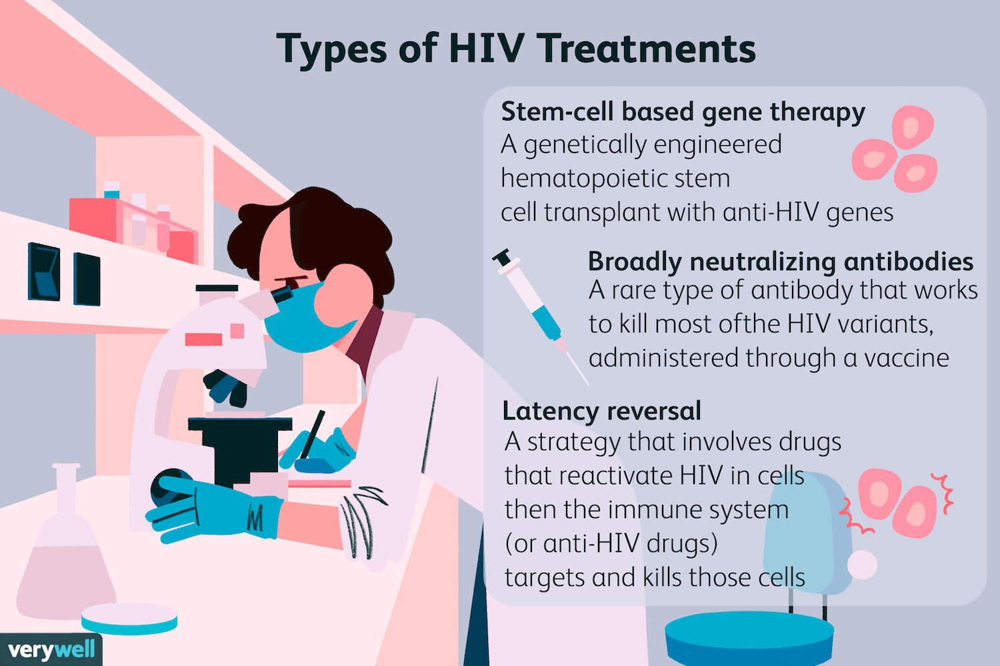

HIV/AIDS

Kinhasa, Congo was the first place where Hepapitits A was discovered
Year Originated
1959
Location of Origin
Kinkhasa, Congo
Spread of Virus/Disease
Global Pandemic
Precautions required
Get tested for HIV, Choose less risky sexual behaviors, Use condoms every time you have sex, Limit your
number of sexual partners, Get tested and treated for STDs, Talk to your health care provider about
pre-exposure prophylaxis (PrEP), Do not inject drugs, never involve heroin, cocain, injection, always be
clean and avoid situation when you unsure if it safe for sex or apply some meds, treatments...

Transmission:
Sexual contact - HIV is spread most commonly by sexual contact with an infected partner. The virus enters the
body through the lining of the vagina, vulva, penis, rectum, or mouth during sexual activity.
Blood contamination - HIV may also be spread through contact with infected blood. However, due to the screening
of blood for evidence of HIV infection, the risk of acquiring HIV from blood transfusions is extremely low.
Needles - HIV is frequently spread by sharing needles, syringes, or drug use equipment with someone who is
infected with the virus. Transmission from patient to healthcare worker, or vice-versa through accidental sticks
with contaminated needles or other medical instruments, is rare.
Mother-infant - HIV also can be spread to babies born to, or breastfed by, mothers infected with the virus.
Symptoms of HIV
People with HIV/AIDS have reported a wide range of symptoms ranging from mild to severe. Symptoms may
appear approximately 2 to 4 weeks after exposure to the virus. Anyone can have mild to severe
symptoms.
Possible symptoms
include:
- Fever or chills
- Night Sweats
- Rash
- Joint pain
- Fatigue
- Nausea or vomiting
- Diarrhea
- Severe Itching
- Weight loss
- Abdomen pain
- Swollen Lymp gland
- Sorethroat and painful mouth sores
This list does not include all possible symptoms. Symptoms may change with new Influenza variants and can
vary by person. The CDC will continue to update this list as we learn more about Influenza.
The consequences of HIV

The impact of HIV/AIDS linger through all the humanity as one of the most tragic epidemic of humankind in the
history
The impact of AIDS has many dimensions, only a few of which are captured in official statistics or analysis by
the research community. The numbers of AIDS cases and HIV infection count as an impact: cumulatively, they state
the effect on the population of the United States and on particular subpopulations. Each case has many
dimensions—personal, professional, and institutional—through the many social organizations that touch the life
of each infected person. Each set of interactions creates an impact, and the diverse impacts have generated
equally diverse responses by individuals, groups, and communities.
Some of the most devastated aspect getting from HIV/AIDS: the public health system, health care finance and
delivery, clinical research and drug regulation, religion, voluntary organizations, the correctional system
In certain aspect like work force:
The findings are sobering, for example: the number of people living with
HIV in the labour force has continued to increase, and will reach 29.9 million in
2020; AIDS will cost a projected 7.2 billion USD in lost earnings; almost half a
million labour-force deaths projected for 2020 are almost entirely avoidable. While
significant strides have been made in the AIDS response, major gaps remain,
which need to be addressed urgently.
Since 2000, the ILO has been supporting governments, employers and
workers organizations and other world of work stakeholders in responding to
HIV and AIDS at national, regional and global levels. Over the years the ILO has
published ground-breaking research, including the 2004 report on HIV/AIDS and
work: Estimates, impact and response, and the 2006 global estimates on the HIV/AIDS
impact on children and youth.
The mortality rate of HIV also very devastated, mean By killing off mainly young adults, AIDS seriously weakens
the taxable population, reducing the resources available for public expenditures such as education and health
services not related to AIDS resulting in increasing pressure for the state's finances and slower growth of the
economy. This results in a slower growth of the tax base, an effect that will be reinforced if there are growing
expenditures on treating the sick, training (to replace sick workers), sick pay and caring for AIDS orphans.
This is especially true if the sharp increase in adult mortality shifts the responsibility and blame from the
family to the government in caring for these orphans.
On the level of the household, AIDS results in both the loss of income and increased spending on healthcare by
the household. The income effects of this led to spending reduction as well as a substitution effect away from
education and towards healthcare and funeral spending. A study showed that households with an
HIV/AIDS patient spent twice as much on medical expenses as other households.
With economic stimulus from the government, however, HIV/AIDS can be fought through the economy. With some
money, HIV/AIDS patients will have to worry less about getting enough food and shelter and more about fighting
their disease. However, if economic conditions aren't good, a person with HIV/AIDS may decide to become a sex
trade worker to earn more money. As a result, more people become infected with HIV/AIDS.
Main Treatment

There have been new specific treatments for HIV/AIDS, however we are still far from having an accurated and
adaptable way to completely cure HIV for a big populations. The solutions so far are the world's experts and
doctors are still keeping researching to find more way to cure HIV.
During the time, WHO strongly advise: HIV is treated with antiretroviral medicines, which work by stopping the
virus replicating in the body. This allows the immune system to repair itself and prevent further damage.
A combination of HIV drugs is used because HIV can quickly adapt and become resistant.
Some HIV treatments have been combined into a single pill, known as a fixed dose combination, although these
often cost more to prescribe.
Usually, people who have just been diagnosed with HIV take between 1 and 4 pills a day. Different combinations
of HIV medicines work for different people, so the medicine you take will be individual to you.
The amount of HIV virus in your blood (viral load) is measured to see how well treatment is working. Once it can
no longer be measured it's known as undetectable. Most people taking daily HIV treatment reach an undetectable
viral load within 6 months of starting treatment.
Many of the medicines used to treat HIV can interact with other medicines prescribed by your GP or bought over
the counter. These include some nasal sprays and inhalers, herbal remedies like St John's wort, as well as some
recreational drugs. Always check with your HIV clinic staff or your GP before taking any other medicines.
There is a new method that cure completely HIV by implant original cell of an extremely rare immune to HIV
peoples, however this way is extremely expensive, extensive, heavily experimental
Discover other virus and how they devastated the society read more to explore
further.
 Up from 65,000,000 to 113,000,412
Up from 65,000,000 to 113,000,412
 approximately from 32,900,124 to 53,124,978
approximately from 32,900,124 to 53,124,978
 5
5